Notes that nobody else can read.
ENotes is a notes app for Android that encrypts everything you put in it, on your phone: every note, checklist, photo, scan, drawing and voice recording. Without your password it is unreadable, to another app, to someone who takes the phone, and to anyone who copies its storage.
It does what a good notes app should, with S Pen drawing, PDFs, templates, reminders and links between notes. It is free, with no adverts, and it cannot go online.
Download for AndroidHow to install
- Version 1.0
- Android 10 or later
- 6.4 MB
Free, with nothing to unlock. No adverts, no account, no tracking. Compare or read the release notes.
Chrome may say the file might be harmful. It shows this for app files that do not come from Google Play. Choose Download anyway.
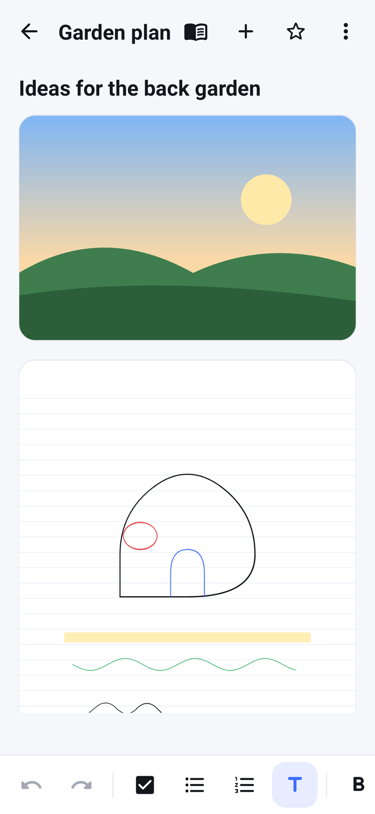
- Everything encryptedAES-256, the moment it is saved.
- No advertsNone in the app and none on this site.
- No accountThere is nothing to sign up to.
- No internetIt has no permission to go online.
A look inside
These are the real screens, drawn from the app's own code with made-up notes. Swipe or scroll sideways to see them all.
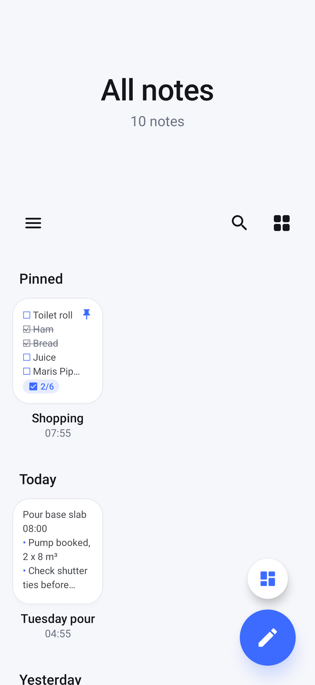
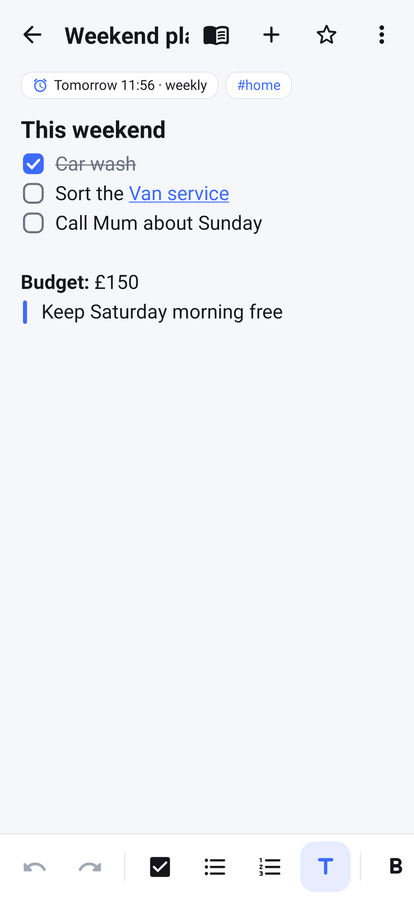
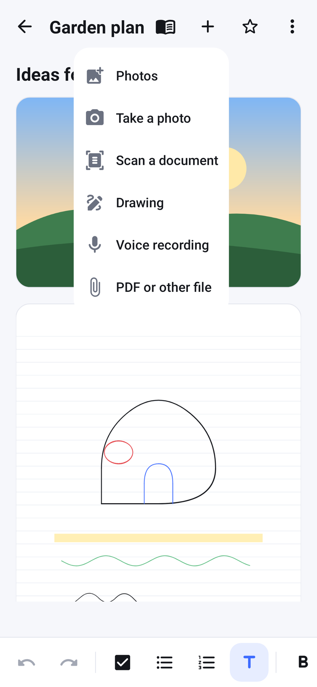
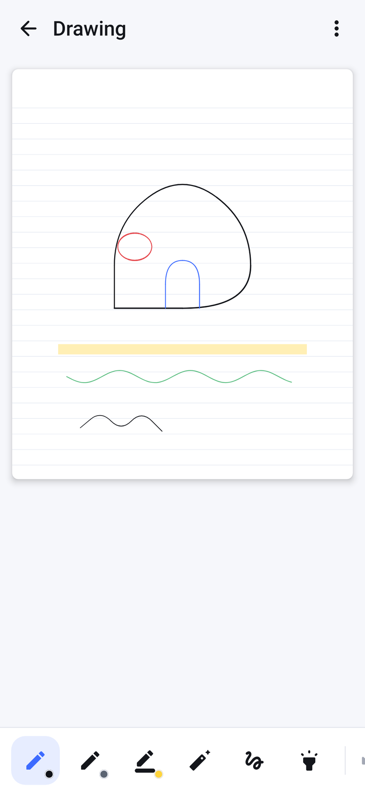
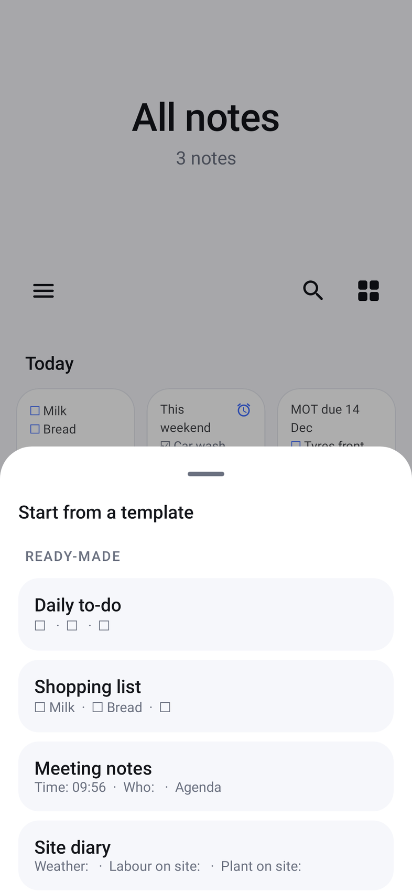
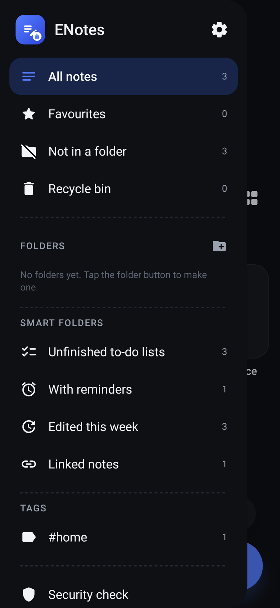
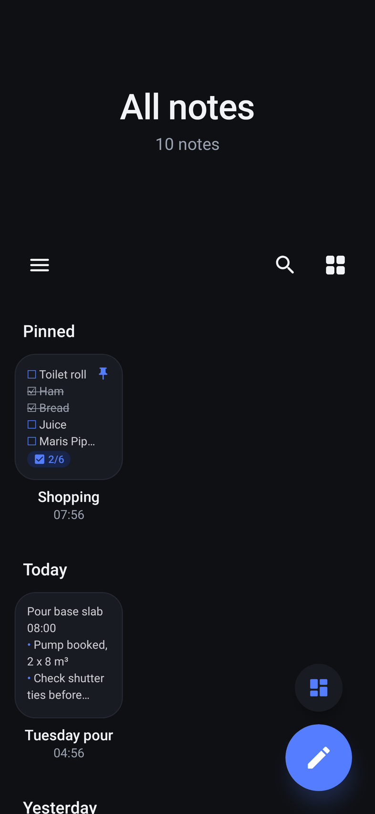
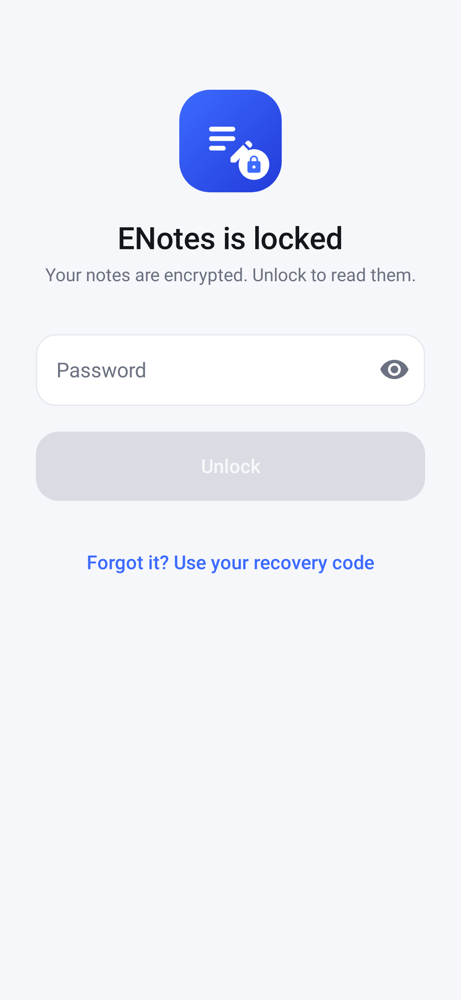
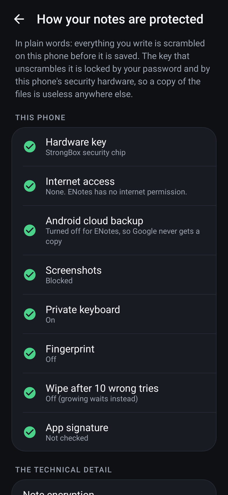
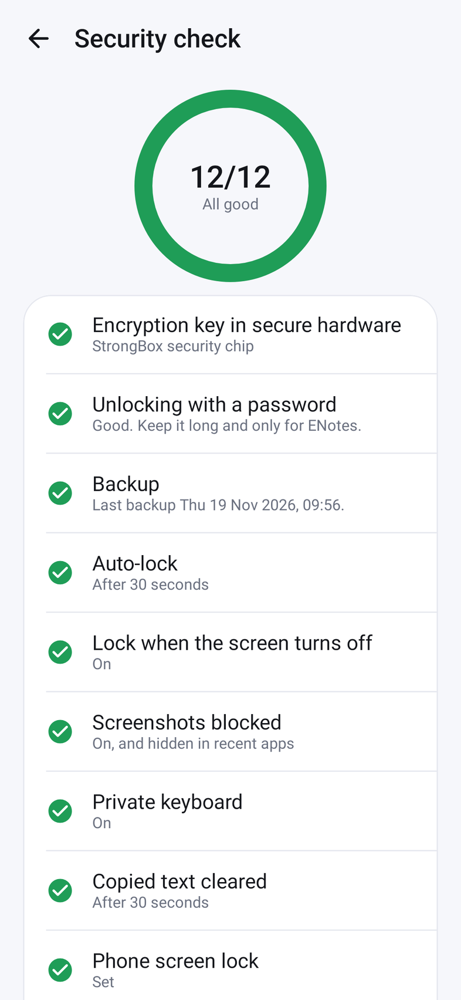
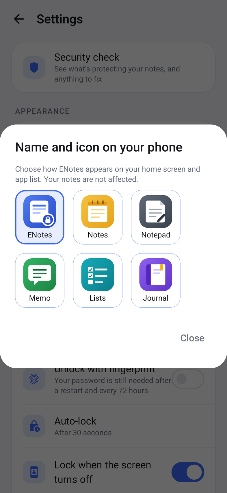
How it works
Your phone's screen lock guards the front door. ENotes is a locked drawer inside: what you write stays scrambled until you open it yourself.
Choose a password
Pick a password or a PIN, add your fingerprint if you like, and write down the recovery code ENotes shows you. It is shown once.
Write as you always do
Notes, checklists, photos, scans, drawings and recordings. Each is encrypted on the phone before it is saved.
Make a backup file
One encrypted file, kept somewhere other than the phone. It is your only spare copy.
Everything is in, and all of it is free
Nothing below is held back for a paid tier, because there is no paid tier.
Writing
- Rich notes and checklists
- Bold, italic, underline, highlight, colours, sizes, headings, quotes, bullets, numbers and tick-box checklists, with undo and redo.
- Links between notes
- Type [[ to link to another note. Each note shows which notes link to it.
- Templates
- Eleven ready-made, such as a daily to-do, a meeting or a site diary, and your own saved from any note.
- Version history
- An earlier version is kept when you come back to a note and change it, up to the last 40, encrypted like everything else.
- Folders, tags and smart folders
- Folders inside folders, colours, tags, pins and favourites, and smart folders such as unfinished to-do lists or notes with reminders.
- Search
- Searches titles, text, tags and attachment names, on the phone, with recent searches kept encrypted. A recycle bin keeps deleted notes for 30 days.
Adding
- Photos that stay out of the gallery
- ENotes has its own camera, so photos go only into the note. Photos added from the gallery lose their location and camera details.
- Document scanner
- Finds the page edges, straightens the page, and saves one page or many as a PDF in the note.
- Drawing and the S Pen
- Pen, pencil, highlighter, eraser and lasso, with pressure, rubbing out with the S Penwith pressure, the pen's eraser button and a pen-only mode#x27;s side button, and a pen-only mode. A laser pointer for showing someone your screen is never saved.
- Voice recordings and PDFs
- Record straight into a note. Open PDFs inside ENotes, write on them and send a copy with your writing on it.
- Reminders, widget and tile
- A reminder on any note, once or repeating. The notification only says “ENotes reminder”. A home-screen widget and a quick-panel tile start a new note.
- Sharing and bringing notes in
- Send a note as a password-protected .enote file, a PDF, Markdown or text. Bring notes in from Google Keep, text and Markdown files.
Locking
- Password or PIN, with fingerprint
- Fingerprint is quick for every day. ENotes still asks for the password after a restart and every 72 hours.
- A lock on chosen notes and folders
- Give a note or a folder its own lock, so it needs a fresh unlock even while ENotes is open.
- Locks itself
- When the screen turns off, and after the time you choose away from the app.
- Wrong tries are slowed
- After four wrong tries the waits grow, up to an hour each time. Wiping everything after ten wrong tries is optional.
- A plainer name and icon
- Show ENotes on the home screen as Notes, Notepad, Memo, Lists or Journal.
- Security check
- One screen shows what is protecting your notes and what you could do better.
Read this first
- Uninstalling ENotes deletes every note
- Your notes live inside the app and nowhere else. Updating is safe: install the new version over the old one and never uninstall first.
- Keep a backup file off the phone
- Settings, Backup makes one encrypted file. It opens with the password you had when you made it. The phone's own backup leaves ENotes out on purpose.
- Nobody can reset your password
- There is no account and no email reset. Write the 24-character recovery code on paper. Without the password or the code, the notes are gone for good.
- No syncing between devices
- ENotes cannot go online, so it does not sync. To move notes, use a backup file or send a protected .enote file.
Nothing in it can leave by itself
No internet permission
Android shows this in the app's permissions. ENotes has no way to send anything anywhere on its own.
Two locks on the key
The key that opens your notes is locked with your password, stretched with Argon2id, and again with a key held in the phone's security chip.
Nothing to capture
Screenshots and the recent-apps preview are blocked, the keyboard is asked not to learn what you type, and copied text is cleared.
Installing and updating
ENotes is not on Google Play, so your phone asks a couple of extra questions the first time.
Download the app file
Tap Download on your phone. The file is called ENotes.apk and is about 6.4 MB. If Chrome says the file might be harmful, choose Download anyway.
Allow the install
Open the file. The first time, Android asks you to allow your browser to install apps. Allow it, go back and tap Install. If Google Play Protect steps in, choose More details, then Install anyway.
Updating later
Install the new file over the old one and every note is kept. Never uninstall first.
Version 1.0, released 22 November 2026. See the release notes, or check your download.
Questions
Is ENotes really free?
Yes. There is no paid version, no subscription and no adverts, and nothing in the app is locked away.
Is ENotes on Google Play?
No. ENotes is a personal project and is downloaded from this site as an Android app file. It needs Android 10 or later.
Do I need a Samsung phone?
No. ENotes works on any Android phone or tablet with Android 10 or later. On a Galaxy phone with an S Pen, it uses the pen's pressure and its button, and other pressure-sensitive styluses work too.
What happens if I uninstall it?
Every note is deleted. The notes are stored inside the app, so uninstalling it, or clearing its storage in the phone's settings, removes them for good. Make a backup file first. Installing an update over the top is safe and keeps everything.
What if I forget my password?
On the lock screen tap Forgot it? and type the recovery code you wrote down at setup. You then choose a new password and get a new code. If you have lost the recovery code as well, there is no way in. Nobody, including the developer, can open it for you.
How do I move to a new phone?
Make a backup file on the old phone and copy it to the new one. Install ENotes on the new phone and choose Restore from a backup file on its first screen, then type the password you had when you made the backup.
Can I sync with my tablet or computer?
No. Syncing needs the internet, and ENotes has no internet permission, so your notes are never on anyone else's computer. To copy notes to another device, use a backup file or a protected .enote file.
Does anything leave my phone?
Only what you choose to send, such as a backup file or a shared note, and only to where you send it. ENotes does not have Android's internet permission, so it has no way to send anything by itself. You can check this in ENotes' App info, under permissions.
Do photos I take go into my gallery?
No. ENotes uses its own camera, so photos and scans go only into the note, encrypted. Photos you add from the gallery are copied in with their location and camera details removed. The gallery copy stays where it was until you delete it.
Can I bring my Samsung Notes across?
Samsung Notes can save a note as a text file or a PDF. Save the notes you want that way, then in ENotes choose Settings, Import notes, or add a PDF to a note. Google Keep notes come across in one go from a Google Takeout file.
Is ENotes unhackable?
No app can honestly promise that. ENotes makes a lost, stolen or copied phone useless to anyone without your password. It cannot protect open notes from spy software on a rooted phone, from someone watching you type, or from a password that is easy to guess. ENotes is new and has not had an independent security review.
How do I update ENotes?
Because ENotes cannot go online, it cannot check for updates by itself. In Settings, About, Copy the updates link copies the address of the download page on GitHub. Install the new version over the one you have and every note is kept.
Your notes, for your eyes only
Free, with no adverts and nothing to unlock. Made by the developer of several other free Android apps: see them all.